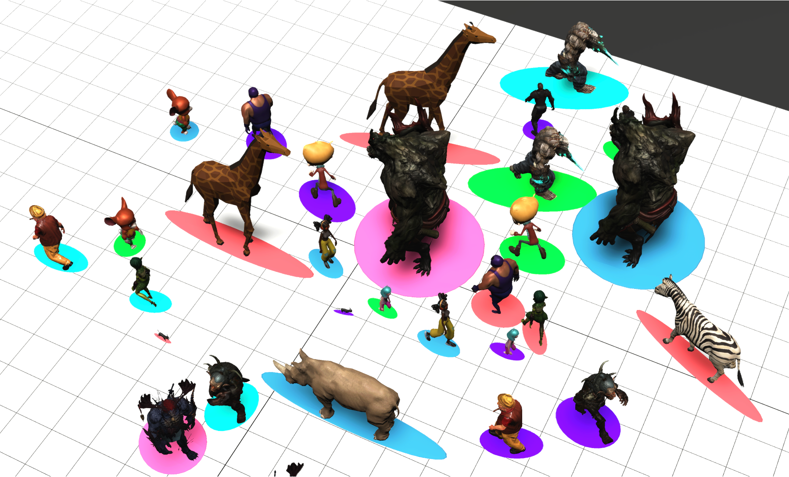
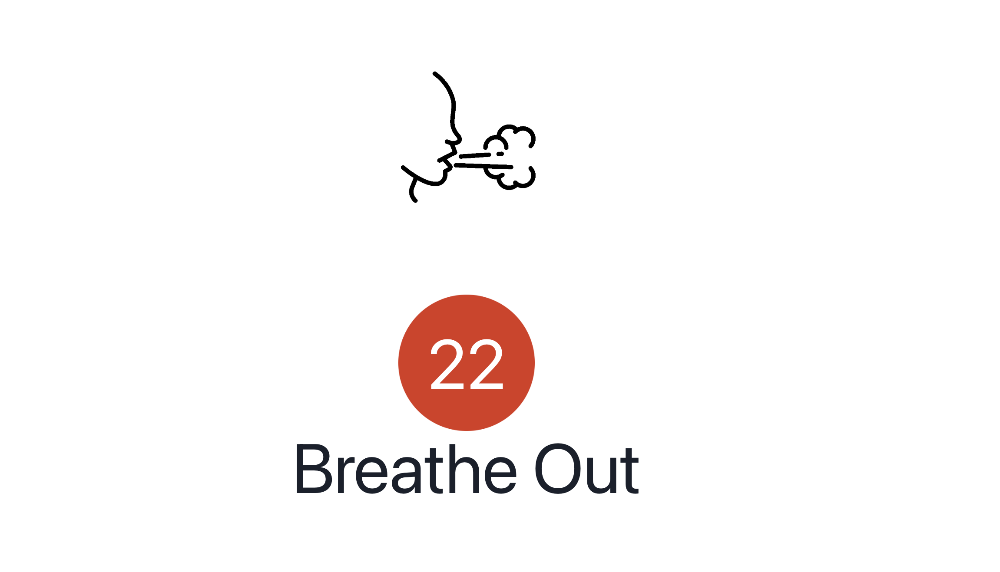
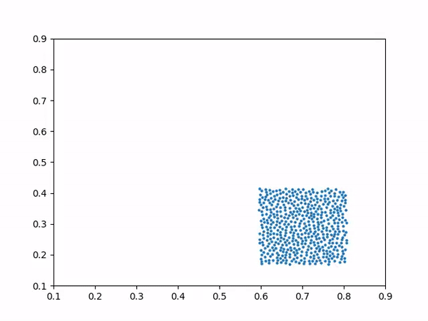
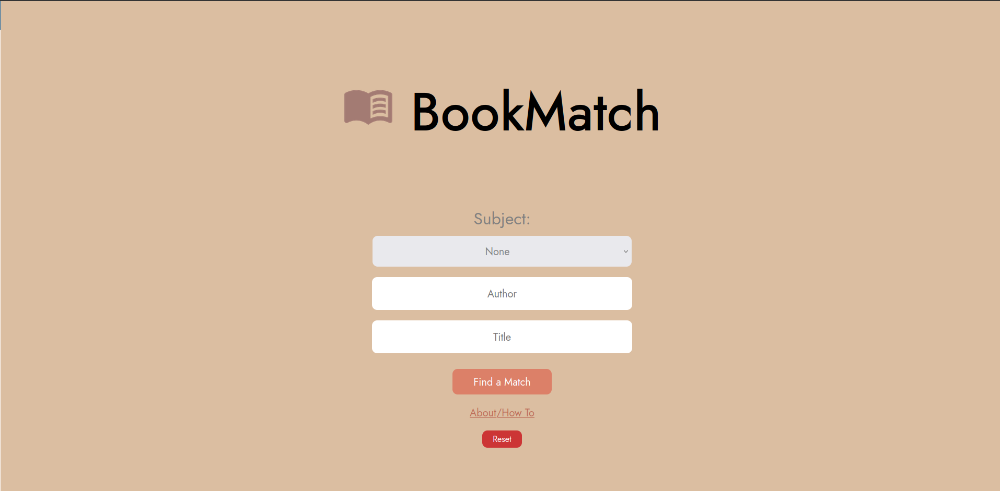
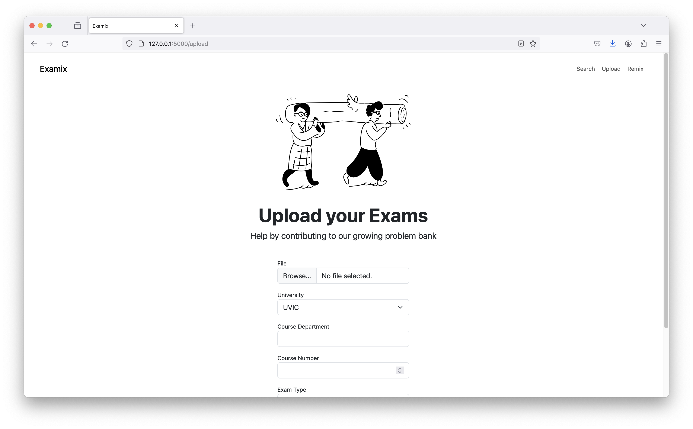

I coauthored a paper titled Deformable Elliptical Particles for Predictive Mesh-adaptive Crowds
in ACM SIGGRAPH Motion, Interaction and Games (MIG) 2024. I was also able to present the paper
at the MIG conference in Arlington, Virginia.
The paper presents a new way to represents characters within crowd simulations, using deformable
elliptical particles. Give it a read by clicking the link above.


Focus Point 2.0 is an application designed to help students focus. Specifically, it helps users
drop into a state of
focus and stay focused. This includes breathing techniques, training to reduce attentional
blinks, a specific color palate, and protocols to increase focus long term.
This project also won first place in the accessibility category at the UVic Google Student
Developer Hackathon 2024 🥇.

This was a group project which used Graph Neural Networks (GNNs) to simulate physics.
We were able to successfully simulate a water drop which was learned from a dataset.
Using GNNs, any simulator which outputs position vectors is able to be learned. While the
learned predictions may not be as physically accurate, there are many applications that don't
require quantitatively true results, such as movies and video games.

BookMatch is a project I made to help pair users with books they might enjoy.
It uses an intuitive swiping mechanism to allow users to swipe left or right on books they like
or dislike.
The app then uses this data to recommend books to the user.

Examix is a project I worked on to help students study for exams more effectively.
It is an automated, intuitive to use, AI exam bank that can also generate exams for students.